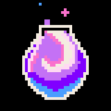
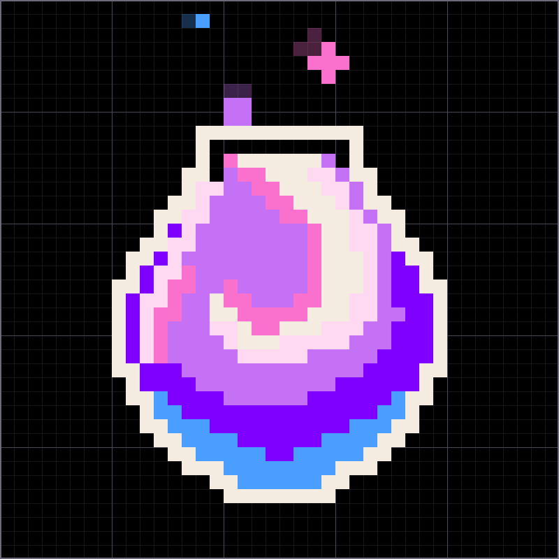
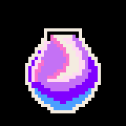
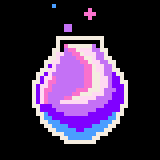
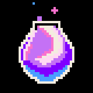
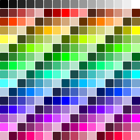
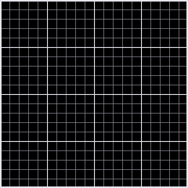
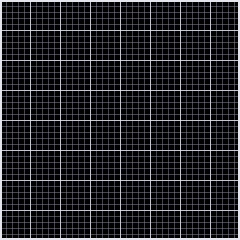
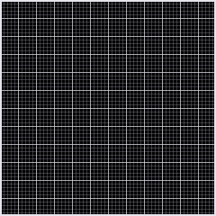

Animación de píxeles
Solo TauriLa animación de píxeles es por ahora exclusiva de Tauri (la edición de pago) — todavía no está disponible en la edición gratuita de descarga.
Modo de edición
Dibujar, previsualizar, fotogramas, colores, exportar e importar. Pasa el cursor sobre cualquier elemento de abajo y la zona correspondiente se ilumina en la imagen.






Los colores y los fotogramas son las dos cosas entre las que más cambias, así que se sitúan juntos; la vista previa en el dispositivo queda fijada en la columna izquierda y nunca se contrae, porque necesitas verla todo el tiempo mientras ajustas los fotogramas.
Cuatro herramientas, dos acciones, un interruptor
Dibujar, borrar, seleccionar y tomar color son lo básico; las herramientas de espejo facilitan copiar la mitad opuesta. El papel cebolla te deja ver en qué se diferencia este fotograma del anterior.
✏Lápizpor defecto
Haz clic en una celda, o mantén pulsado y arrastra, para rellenar con el color seleccionado en ese momento.
▱Goma
Vacía las celdas a transparente — es decir, el índice 0. Transparente en el dispositivo significa «no encendido», no «pintado de negro».
⬚Seleccionar
Dibuja un recuadro para extraer una región — puedes moverla, voltearla o copiarla a otro fotograma.
Mientras hay una selección activa, las teclas de flecha la desplazan una celda; sin selección, las flechas cambian de fotograma — las mismas teclas, según si tienes algo agarrado o no.
◍Cuentagotas
Haz clic en una celda para tomar su índice de color. Haz clic en una celda vacía y tomas el transparente.
⇋Voltear horizontal / Voltear vertical
Lo que se voltea es la selección; sin selección, se voltea el lienzo entero.
Estas dos no son herramientas, son acciones — pulsas una y ocurre una vez, nunca se queda en un estado «seleccionado».
◨Papel cebollaactivo por defecto
Superpone tenuemente el fotograma anterior bajo el actual, para que veas dónde terminó el movimiento del último fotograma. El primer fotograma muestra debajo el último — como la animación se repite en bucle, el «fotograma anterior» del primero es el último.
Solo el lienzo dibuja el papel cebolla. La vista previa en el dispositivo deliberadamente no lo hace: está pensada para mostrar exactamente lo que el dispositivo va a encender.
Fotogramas y milisegundos
La mitad superior de la columna derecha es la tira de fotogramas. Cada fotograma tiene su propia duración en milisegundos — la animación entera no comparte una sola velocidad, cada fotograma tiene su propio valor. Para mantener un fotograma medio tiempo más, cambia solo ese fotograma.
- ＋ Inserta un fotograma en blanco después del actual.
- ⧉ Inserta un duplicado después del actual — las animaciones con ajustes sutiles se hacen crecer casi siempre así.
- 🗑 Borra el fotograma actual. Se desactiva cuando solo queda uno: una animación no puede quedarse sin fotogramas.
- ← / → Intercambia el lugar con el fotograma anterior / siguiente. Se desactiva automáticamente en los extremos.
Sin selección, las teclas ← → cambian de fotograma directamente — es la forma más rápida de juzgar si el movimiento se lee bien: pasa de uno a otro y observa si parece que se mueve.
Colores: 36 plazas, 256 candidatos
«Colores de esta animación» es el conjunto de muestras que esta animación usa realmente, con un tope de 36 colores. Ese número no es una preferencia de diseño — es el tamaño de la paleta del firmware del dispositivo, y todo lo que lo exceda no tiene dónde ir allí, así que el editor te detiene justo aquí.
Debajo, «Elige un color» es la paleta integrada de 256 colores: 16 tonos de gris, más 24 matices × diez variantes (cinco apagadas, cinco vivas, cada una en cinco niveles de brillo). El brillo deliberadamente no llega a ninguno de los dos extremos — demasiado oscuro es invisible en el panel negro puro, y el blanco puro ya está en la fila de grises.
＋Añadir
Añade este color a «Colores de esta animación» y lo selecciona. Un color que ya está en uso simplemente se selecciona al hacer clic — no ocupa una segunda plaza.
⇄Sustituir
Cambia la muestra seleccionada en ese momento por un color nuevo — cada celda de la imagen que lo usa cambia a la vez. Úsalo cuando las plazas están llenas, o cuando quieres desplazar la paleta entera.
El índice 0 es transparente y no se puede sustituir por un color.
⚠️ El panel del dispositivo es negro puro. Un color oscuro que se ve perfecto en una interfaz de edición blanca simplemente desaparecerá una vez en el dispositivo — así que elige toda la animación de la mitad más luminosa.
Tamaños de lienzo admitidos
Por ahora se admiten tres tamaños — 20×20, 40×40, 60×60 — determinados sobre todo por los tamaños que admite el firmware del dispositivo de código abierto. En el futuro se desarrollarán más tamaños para usos como los abalorios para planchar y el tejido.

20 × 20celdas más grandesPocas celdas, cada una grande. Va bien para insignias, símbolos, expresiones mínimas — tienes que decir algo con apenas un puñado de celdas. En el dispositivo son 12 px por celda a pantalla completa, 4 px como insignia.
40 × 40habitualEl punto de equilibrio entre el detalle y el trabajo. La mayoría de las animaciones de splash a pantalla completa se dibujan a este tamaño: 6 px por celda, 2 px como insignia.
60 × 60celdas más pequeñasMuchas celdas, cada una pequeña. Hay sitio para curvas y degradados, pero rellenarla celda a celda también lleva el máximo tiempo.Vista previa en el dispositivo y el límite de animación de 20 segundos
La misma animación aparece en dos lugares del dispositivo, así que aquí obtienes dos tamaños de vista previa a la vez:
- Splash a pantalla completa — llena todo el panel al arrancar o en reposo.
- Insignia de esquina — un pequeño icono metido en la esquina superior izquierda también puede animarse. Una animación de 40×40 son aquí solo 2 px por celda, así que el detalle se difumina por completo. Lo ves mientras dibujas, sin necesidad de grabarlo primero para averiguarlo.
Lo que previsualizas es lo que muestra el dispositivo.
Cómo leer los números
El dispositivo da a cada animación una rotación fija de 20 segundos. El editor convierte «milisegundos por fotograma × número de fotogramas» en cuántas vueltas caben en 20 segundos, y luego te dice si se corta. La imagen de arriba son dos fotogramas de 125 ms cada uno — una vuelta son 250 ms, y 20 segundos son exactamente 80 vueltas — así que muestra el primer estado de abajo.
Que se corte o no no es correcto ni incorrecto, es un compromiso. A algunas animaciones no les importa cortarse a media vuelta (una escena de lluvia, por ejemplo), otras quedan arruinadas por ello (un fuego artificial que estalla a la mitad) — así que el editor solo te dice los hechos, no decide por ti.
Interfaz de archivo legible por máquina: JSON
La animación de píxeles se guarda en un formato legible por máquina — JSON, no una imagen. Pegar lee una animación existente, Copiar deja la animación entera en el portapapeles, Guardar la escribe en un archivo. Exportar e importar siguen siendo fáciles en ambos casos.
◎Nombre de la animaciónobligatorio
El dispositivo encuentra las animaciones por su nombre, así que el nombre debe ser único; dejarlo en blanco se bloquea antes de guardar.
Pero exportar no significa que vaya a aparecer. El nombre todavía tiene que añadirse a la lista de grupos del firmware del dispositivo para que esa animación entre en la rotación — así que acuérdate de agruparla.
▤Categoría
Idle / Work / Dance / Expressions. Estos cuatro valores son constantes de formato, mostradas en su inglés original en las cuatro interfaces de idioma — porque es exactamente lo que consume el dispositivo.
Cuando un archivo importado trae una categoría fuera de esta lista, el editor la conserva tal cual y la vuelve a sacar igual. Entra tal cual, sale tal cual, por delante de cualquier pulcritud de la lista.
El JSON exportado alimenta el formato de animación de los dispositivos de código abierto — por ejemplo Clawdmeter y otros aparatos de escritorio que funcionan con el ESP32. En el lado de VAS copias el código JSON, en ese lado lo pegas para que una IA lo procese, sin necesidad de ninguna herramienta de conversión.
Dibujar con una IA
Aquí es donde el modo de píxeles se diferencia más del resto de capítulos: su archivo guardado es un texto con el que puedes mantener una conversación.
Un fotograma es una matriz bidimensional, cada valor un índice de color, con el 0 para transparente. Esta estructura es legible tanto por personas como por una IA — así que puedes pegar la animación entera a una IA, decir «añade tres fotogramas más para que parpadee» y pegar de vuelta en el editor el JSON que te devuelve.
{ "name": "vas", "category": "Idle",
"palette": ["transparent", "#F4ECE0", "#C471F5", "#4A9EFF"],
"frames": [ { "hold": 125, "grid": [ [0,0,1,1,0,0], … ] }, … ] }
Una IA no siempre puede dibujar tu intención a la perfección, pero a través de una interfaz que habla su mismo idioma, puedes dejar que vea lo que quieres decir.